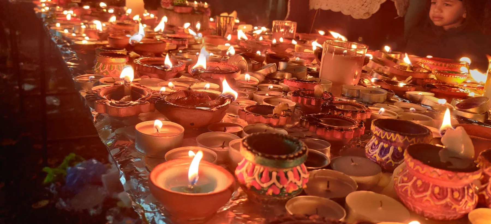

OUR GURDWARA
Rooted in faith, open to all
A place for Gurbani, reflection and community, welcoming visitors of every background.
THE GURDWARA
Come as you are, and find a moment of peace
Guru Ka Niwas means “the abode of the Guru.”
Located on Rothesay Gardens in Wolverhampton, the Gurdwara is a place to listen to Gurbani, reflect, and share in the spirit of sangat and seva.
Whether you are part of the local Sikh community or visiting a Gurdwara for the first time, you are welcome to learn, reflect and be present.
Discover worship & community
Wisdom for
every generation
The teachings of the Gurus continue to inspire equality, compassion and service to others. Our doors are open to everyone who comes with respect.
Discover the history of Guru Ka Niwas →Inside Guru Ka Niwas
A glimpse of the Gurdwara: the Darbar Sahib, the langar hall and the sangat coming together. Photographs from the Gurdwara's own collection.




Explore worship & sangat
Discover how faith and community come together.